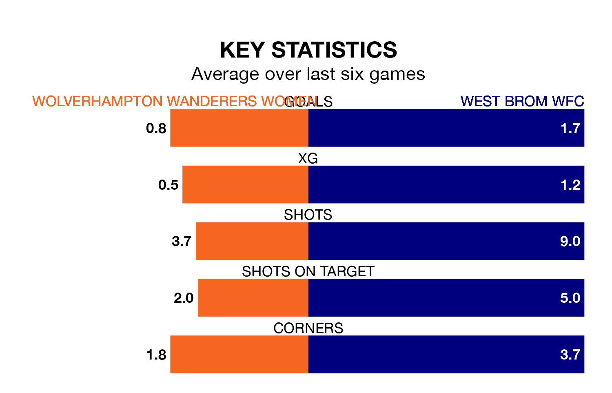

West Brom WFC face Wolverhampton Wanderers Women on Friday seeking to protect their formidable unbeaten run in the Women's National League Premier Division North.
West Brom WFC are unbeaten in nine, with five wins and four draws, ahead of the 7.45pm kick-off.
They face a Wolverhampton Wanderers team who have won four and drawn three over the same number of games.
With 24 goals in 13 games so far this season, Wolverhampton Wanderers are scoring more than average in the league with 1.8 goals per game. And they are conceding fewer than average, letting in 10 goals at a rate of 0.8 per game.
West Brom WFC, meanwhile, are below average scorers, with 1.4 goals per game, compared to a league average of 1.6. They have conceded 1.5 goals per game.
The away side are fourth in the table after 18 games, of which they have won seven and drawn five, earning 26 points.
The hosts are two places behind West Brom WFC in sixth, with six wins and four draws putting them on 22 points.
In the last five years, Wolverhampton Wanderers and West Brom WFC have played each other on five occasions. Wolverhampton Wanderers won all of them.
On average, Wolverhampton Wanderers scored 2.8 goals and West Brom WFC 0.6 in those matches.
Their last meeting was on October 22, when Wolverhampton Wanderers won 3-1 away.
Wolverhampton Wanderers' last match was on Sunday, a 3-2 loss against Newcastle United Women.
West Brom WFC beat Halifax Women 1-0 last time out, also on Sunday.
Updated: 10:19 (UTC), 22/03/24